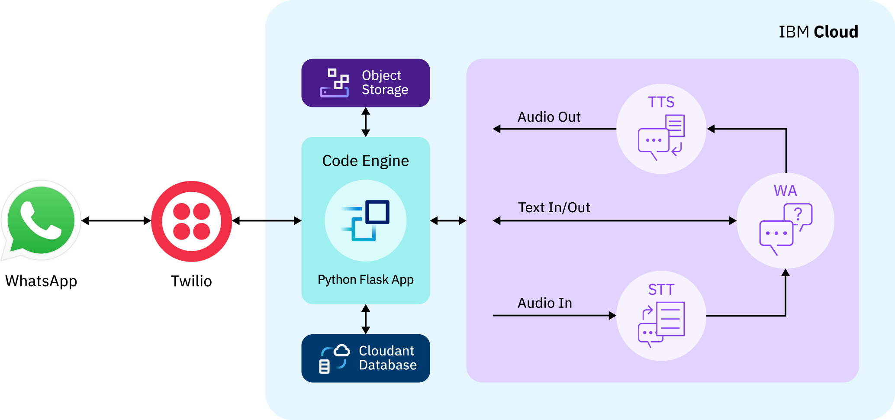
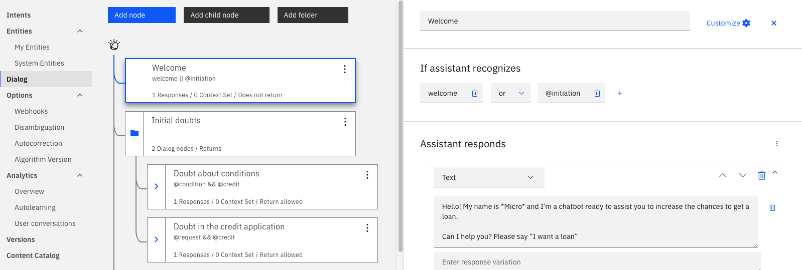
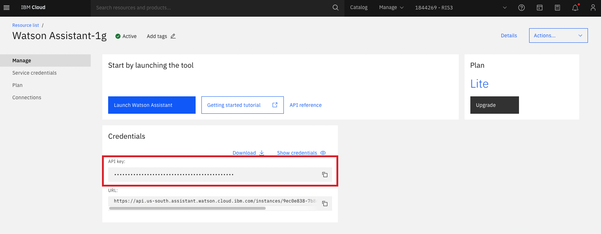
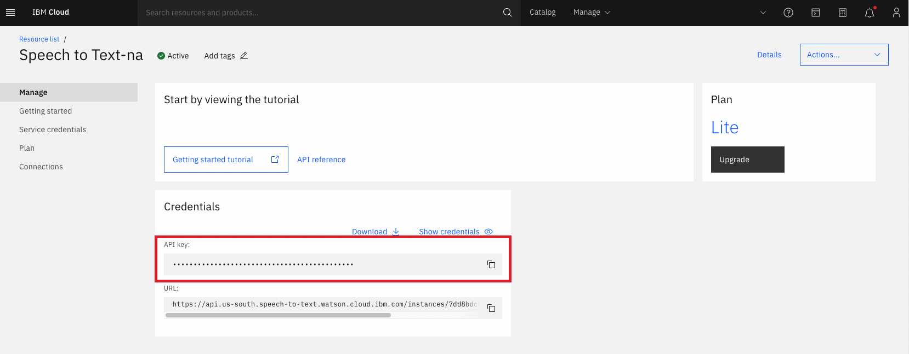

View the Project on GitHub IBM/customized-voice-text-bot-for-whatsapp-telegram
As shown in the application architecture below, we built the app based on IBM technologies, such as Watson Assistant, Object Storage, and Code Engine. The AI components of the application, contained in the lilac box, were developed with IBM Watson Services: Watson Assistant, Watson Speech-to-Text, and Watson Text-to-Speech, part of the IBM technologies.
The Watson Services are valuable tools for enhancing the effectiveness of conversational user interfaces. Based on research, we can affirm that Watson STT and TTS catalyze user engagement and make the chatbot more efficacious in talking, informing, and collecting data.
On this page, you will find more information about Watson Services and how to obtain their API keys, which are necessary information to proceed to test and deploy the app.
Watson Assistant (or WA) is the IBM Cloud service that actually implements the chatbot technology. The documentation has lots of helpful tips for working with WA. As seen in the next image image, talking to a chatbot can be thought of as interacting with a dialog tree, in which different nodes represent different stages in a conversation. For example, if you said "hi" to a friend, that might be the start node in your conversation, which would then flow into a catching-up node as you ask your friend about their day.
When you create your own Watson Assistant, you would see that it works by adding Skills. You then associate a given skill with your assistant. There are three types of skills available at this time of writing: Action, Dialog, and Search. The chatbot used in this challenge is a Dialog Skill. To start working with the chatbot, download the JSON file at skills_assistant/OpenSource-Release-dialog.json, and navigate to the Skill dashboard as shown in this picture:
After that, choose "Create Skill", and there should be a button on the following page to upload a skill - upload the JSON file there.
Below, we listed the environment variables (env vars) related to IBM Watson STT on our source code:
These env vars are necessary for using the WA API v2. You can find more information about WA API here.
After you create an instance of WA on IBM Cloud, open the resource list, then go to the WA instance you created and click on the instance title. The service page will open, then click on manage and copy the API key.
The WA service URL is below the API key on WA service page at IBM Cloud (see picture above).
The WA ID is the bot ID that Watson Assistant API will provide interaction. On WA classic experience, the ID of an assistant can be found on the assistant configuration. The assistant configuration is inside the service page, reachable on the resource list at IBM Cloud.
For more information about Watson Assistant, plese refere to this content.
The IBM Watson Speech to Text service provides speech transcription. The service leverages machine learning to combine knowledge of grammar, language structure, and the composition of audio and voice signals to accurately transcribe the human voice (STT Documentation).
Below, we listed the environment variables (env vars) related to IBM Watson STT on our source code:
These env vars are necessary for using the STT API. You can find more information about STT API here.
After you create an instance of STT on IBM Cloud, open the resource list, then go to the STT instance you created and click on the instance title. The service page will open, then click on manage and copy the API key.
The STT service URL is below the API key on STT service page at IBM Cloud (see picture above).
The STT model should be compatible to the chatbot users main language. As we are using WhatsApp and Telegram, it is appropriate to use Multimedia models for better results. To see a list of all STT supported languages and their models names please refer to here.
Example of STT_MODEL value: en-US_Multimedia
The IBM Watson™ Text to Speech service provides APIs that use IBM's speech-synthesis capabilities to convert written text to natural-sounding speech. The service streams the synthesized audio back to the client with minimal delay. The audio uses appropriate cadence and intonation for its language and dialect to provide voices that are smooth and natural.
The service can be used in applications such as voice-automated chatbots, as well as a variety of voice-driven and screenless applications, such as tools for the disabled or visually impaired, video narration and voice over, and educational and home-automation solutions. It is appropriate for any application where audio is the preferred method of output (TTS Documentation).
Below, we listed the environment variables (env vars) related to IBM Watson TTS on our source code:
These env vars are necessary for using the TTS API. You can find more information about TTS API here.
After you create an instance of TTS on IBM Cloud, open the resource list, then go to the TTS instance you created and click on the instance title. The service page will open, then click on manage and copy the API key.
The TTS service URL is below the API key on TTS service page at IBM Cloud (see picture above).
The TTS default voice should match the Watson Assistant bot language. To see a list of all TTS avaliable voices and choose the best voice for your bot please refer to here.
Example of TTS_DEFAULT_VOICE value: en-US_MichaelV3Voice